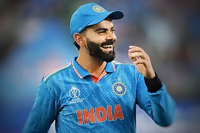

Virat Kohli is an Indian cricketer who plays for India national cricket team. He was born in Delhi, India on November 5, 1988. Virat is the first player in ICC cricket history to win all 3 ICC awards in a single year- ICC , ODI player of the year, ICC Test player of the year and ICC Player of the year award in 2018.
Kohli's playing style is widely regarded as aggressive, a trait that extends to his leadership on the field. Kohli is known as a skilled batsman who plays with determination and energy. In one-day cricket, he usually bats at number three and stands with his chest slightly open and holds the bottom of his bat firmly. He's praised for his quick footwork, wide range of shots, and his talent for leading innings, especially in high-pressure situations. Instead of trying to hit big shots, Kohli prefers to play safe shots close to the ground. People admire his ability to make wrist shots and consistently perform well in the mid-wicket and cover areas.
National side
India (2008–present)
Test debut (cap 269) 20 June 2011 v West Indies
Last Test 4 January 2024 v South Africa
ODI debut (cap 175) 18 August 2008 v Sri Lanka
Last ODI 19 November 2023 v Australia
ODI shirt no. 18
T20I debut (cap 31) 12 June 2010 v Zimbabwe
Last T20I 10 November 2022 v England
T20I shirt no. 18
He currently represents Royal Challengers Bangalore in the IPL . Kohli is widely regarded as one of the greatest batsmen in the history of cricket, and the best of 21st century. He is the highest run scorer in T20I and IPL.